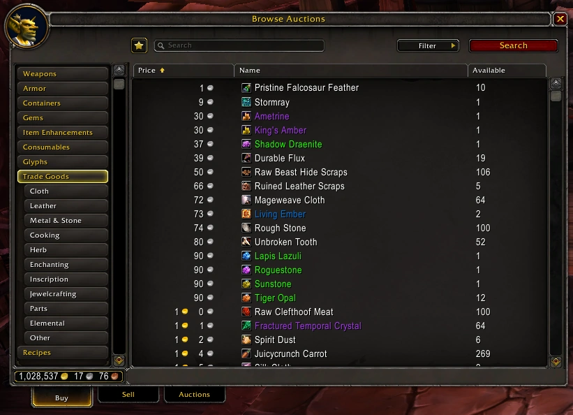
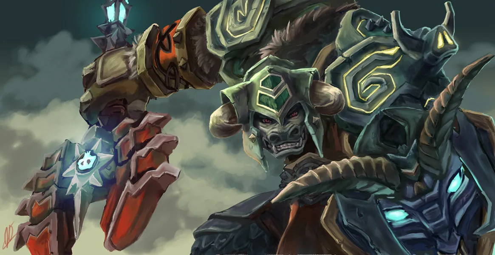
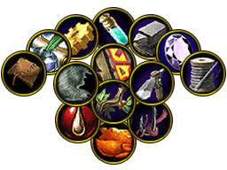

Schedule
- Icecrown Citadel raid: 21:00
- Heroic Dungeons: 23:00
How to become rich in World Of Warcraft
No matter if you are a new or seasoned player in World of Warcraft, you need to earn gold to stay at the top of your game. The five tips below tell you exactly how to do that.
- Play the Auction House
- Be a Tank!
- Max Out Crafting Skills
1. Play the Auction House
The Auction House is one of those hidden gems that can help you earn lots of gold in WoW. The basic premise is buying low and selling high. The other thing to do is to corner the market. Buy up all of an item (usually a trade skill item—herbs, metal, etc.) and resell them at a much higher price. It requires constant commitment, though. To get the flow of gold going, you will have to let your items expire and then re-list them immediately. You have to find new items to buy depending on what is the demand at the time, so ensure you keep up with the trends of what item is needed at any given time. A new patch can throw the market into chaos, which is the best time to pick up a lot of gold or a lot of items cheaply. The Auction House has gone through a lot of changes to prevent scams, so while it may not be the gold mine it once was, it can still be profitable. Keep in mind you will lose money sometimes and you won't always be able to sell every item. There are times you need to cut your losses and move on!
2. Be a Tank!
Being a tank is the best way to earn a lot of gold. Tanks currently control the grouping landscape in Warcraft. Earning extra rewards by participating in random instances where tanks are needed is a great way to earn unexpected, and sometimes random, amounts of gold. Also, reward bags can contain gold and other items. One of the items that always sells well is the companions. At one point, I was given the Firefly pet from my bag, which sells for thousands of gold for the server I am on.
3. Max Out Crafting Skills
As risky and costly as it might sound, having two crafting skills will pay off in the long run. Besides the fact that you have two skills to upgrade your gear, you will have two skills to choose from to make gold with. In every expansion or patch, some skills swing from being stagnant to in-demand. Having two crafting skills will allow you to take advantage of the situation. You may pay a lot for materials, but you could also craft items using supplies provided by people, which people tip plenty for. On the flip-side, having two gathering skills is virtually all profit with no loss. With a lot of effort and time, you can have a lot of resources to sell off on the Auction House. Just ensure you follow tip one so you get as much money as possible. It's debatable on what those skills should be, but Mining should be one of them. Ore has always proven to be one of the most valuable resources to sell. With a lot of hard work, you can become rich in no time.
